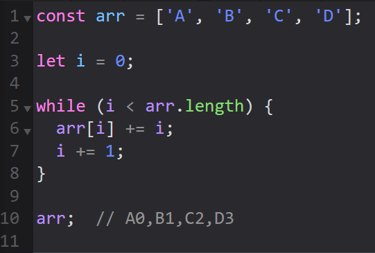

цикл while
- подготовка выполняется перед циклом: let i = 0;
- в круглых скобках, после while происходит проверка
- в фигурных скобках происходит изменение данных
- выполнение происходит на каждом шаге цикла:
- в начале выполнения шага:
i < arr.length;
- изменение счетчика и задание шага происходят на каждом шаге цикла:
i += 1
- наиболее распостранненые ошибки: не добавили изменение счетчика и неверно задано условие проверки

next
back